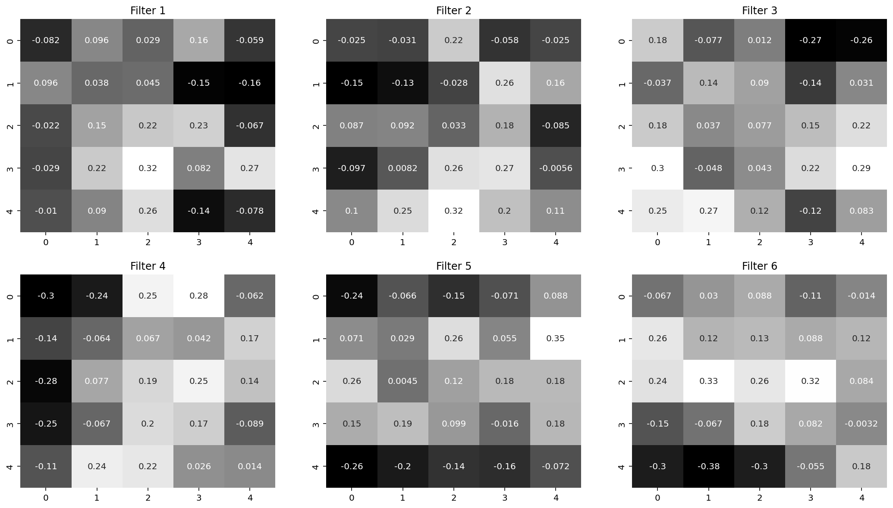
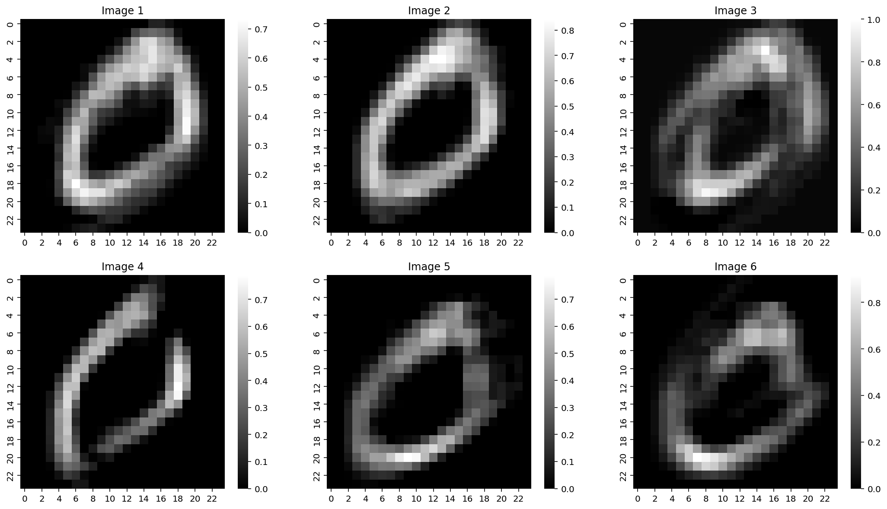
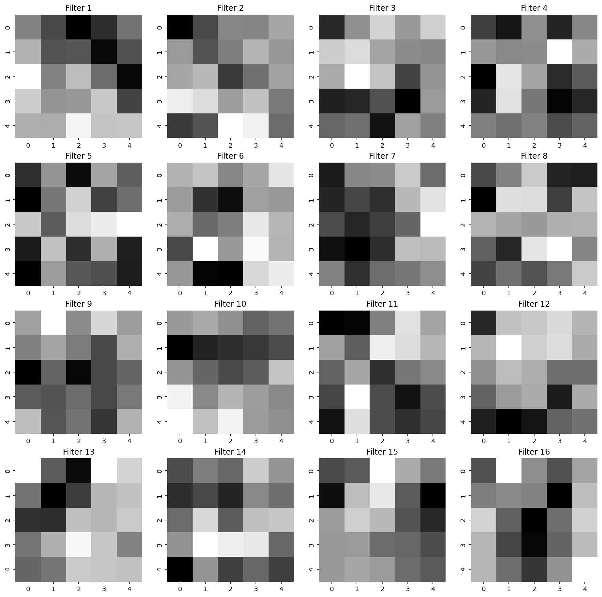

import torchimport torch.nn as nnimport torch.nn.functional as Fimport torch.optim as optimimport numpy as npimport matplotlib.pyplot as pltfrom torch.utils.data import DataLoader, TensorDatasetimport seaborn as sns%matplotlib inline%config InlineBackend.figure_format ='retina'# Set random seed for reproducibilitytorch.manual_seed(0)# Torch versiontorch.__version__
'2.0.0+cu118'
# MNIST datasetfrom torchvision import datasets, transformsimport torchvision# Split MNIST into train, validation, and test setstrain_data = datasets.MNIST(root='data', train=True, download=True, transform=transforms.ToTensor())test_data = datasets.MNIST(root='data', train=False, download=True, transform=transforms.ToTensor())# Split train_data into train and validation setsval_data = torch.utils.data.Subset(train_data, range(50000, 51000))# Reduce the size of the training set to 5,000train_data = torch.utils.data.Subset(train_data, range(0, 5000))
# Get weights and biases from the first convolutional layerweights = model.conv1.weight.dataw = weights.numpy()# Plot the weightsfig, axes = plt.subplots(2, 3, figsize=(18, 10))ax = axes.ravel()for i inrange(6): sns.heatmap(w[i][0], ax=ax[i], cmap='gray', cbar=False, annot=True) ax[i].set_title('Filter {}'.format(i+1))

# Get output from model's first conv1 layerconv1 = F.relu(model.conv1(test_img))# For plotting bring all the images to the same scalec1 = conv1 - conv1.min()c1 = c1 / conv1.max()print(c1.shape)print("1 image, 6 channels, 24x24 pixels")
# Visualizae the output of the first convolutional layerfig, axes = plt.subplots(2, 3, figsize=(18, 10))ax = axes.ravel()for i inrange(6): sns.heatmap(c1[0][i].detach().numpy(), ax=ax[i], cmap='gray') ax[i].set_title('Image {}'.format(i+1))

# Get output from model after max poolingpool1 = F.max_pool2d(conv1, 2)# For plotting bring all the images to the same scalep1 = pool1 - pool1.min()p1 = p1 / pool1.max()print(p1.shape)print("1 image, 6 channels, 12x12 pixels")# Visualizae the output of the first convolutional layerfig, axes = plt.subplots(2, 3, figsize=(18, 10))ax = axes.ravel()for i inrange(6): sns.heatmap(p1[0][i].detach().numpy(), ax=ax[i], cmap='gray') ax[i].set_title('Image {}'.format(i+1))
# Visualize the filters in the second convolutional layerweights = model.conv2.weight.dataw = weights.numpy()# Plot the weightsfig, axes = plt.subplots(4, 4, figsize=(16, 16))ax = axes.ravel()for i inrange(16): sns.heatmap(w[i][0], ax=ax[i], cmap='gray', cbar=False) ax[i].set_title('Filter {}'.format(i+1))

# Get output from model's second conv2 layerconv2 = F.relu(model.conv2(pool1))# For plotting bring all the images to the same scalec2 = conv2 - conv2.min()c2 = c2 / conv2.max()print(c2.shape)print("1 image, 16 channels, 8x8 pixels")# Visualizae the output of the first convolutional layerfig, axes = plt.subplots(4, 4, figsize=(18, 18))ax = axes.ravel()for i inrange(16): sns.heatmap(c2[0][i].detach().numpy(), ax=ax[i], cmap='gray') ax[i].set_title('Image {}'.format(i+1))
# Get output from model after max poolingpool2 = F.max_pool2d(conv2, 2)# For plotting bring all the images to the same scalep2 = pool2 - pool2.min()p2 = p2 / pool2.max()print(p2.shape)print("1 image, 16 channels, 4x4 pixels")# Visualizae the output of the first convolutional layerfig, axes = plt.subplots(4, 4, figsize=(18, 18))ax = axes.ravel()for i inrange(16): sns.heatmap(p2[0][i].detach().numpy(), ax=ax[i], cmap='gray') ax[i].set_title('Image {}'.format(i+1))
# Flatten the output of the second convolutional layerflat = pool2.view(pool2.size(0), -1)print(flat.shape)
torch.Size([1, 256])
# Repeat the above process as a function to visualize the convolution outputs for any image for any layerdef scale_img(img):""" Scale the image to the same scale """ img = img - img.min() img = img / img.max()return imgdef visualize_conv_output(model, img):""" Visualize the output of a convolutional layer """# Get output from model's first conv1 layer conv1 = F.relu(model.conv1(img))# For plotting bring all the images to the same scale c1 = scale_img(conv1)# Visualizae the output of the first convolutional layer fig, axes = plt.subplots(2, 3, figsize=(18, 10)) ax = axes.ravel()for i inrange(6): sns.heatmap(c1[0][i].detach().numpy(), ax=ax[i], cmap='gray') ax[i].set_title('Image {}'.format(i+1))# Add title to the figure fig.suptitle('Convolutional Layer 1', fontsize=16)# Get output from model after max pooling pool1 = F.max_pool2d(conv1, 2)# For plotting bring all the images to the same scale p1 = scale_img(pool1)# Visualizae the output of the first convolutional layer fig, axes = plt.subplots(2, 3, figsize=(18, 10)) ax = axes.ravel()for i inrange(6): sns.heatmap(p1[0][i].detach().numpy(), ax=ax[i], cmap='gray') ax[i].set_title('Image {}'.format(i+1))# Add title to the figure fig.suptitle('Max Pooling Layer 1', fontsize=16)# Get output from model's second conv2 layer conv2 = F.relu(model.conv2(pool1))# For plotting bring all the images to the same scale c2 = scale_img(conv2)# Visualizae the output of the first convolutional layer fig, axes = plt.subplots(4, 4, figsize=(18, 18)) ax = axes.ravel()for i inrange(16): sns.heatmap(c2[0][i].detach().numpy(), ax=ax[i], cmap='gray') ax[i].set_title('Image {}'.format(i+1))# Add title to the figure fig.suptitle('Convolutional Layer 2', fontsize=16)# Get output from model after max pooling pool2 = F.max_pool2d(conv2, 2)# For plotting bring all the images to the same scale p2 = scale_img(pool2)# Visualizae the output of the first convolutional layer fig, axes = plt.subplots(4, 4, figsize=(18, 18)) ax = axes.ravel()for i inrange(16): sns.heatmap(p2[0][i].detach().numpy(), ax=ax[i], cmap='gray') ax[i].set_title('Image {}'.format(i+1))# Add title to the figure fig.suptitle('Max Pooling Layer 2', fontsize=16)